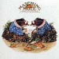
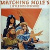
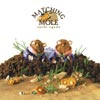
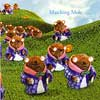
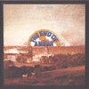
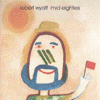
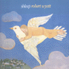

strange music page
canterbury music * * * matching mole/Robert Wyatt
#元ソフトマシーン
もしも神様が喋るならこんな声で。 |
- Matching Mole
- Robert Wyatt
|
#Soft Machineを脱退したR.Wyattが結成したMatching Mole(名前は、Soft Machineのフランス語読みのパロディ)の1枚目。フリーキーな雰囲気が楽しいです。ジャズ色もけっこー強いです、1曲目はカンタベリーらしい暖かみを感じるとても良い曲です。
単独歌モノとセッションが混じったような構成かな？

- O Caroline
- Instant Pussy
- Signed Curtain
- Part of the Dance
- Instant Kitten
- Dedicated to Hugh, But You Weren't Listening
- Beer as in Braindeer
- Immediate Curtain
- Robert Wyatt (drums,voice,mellotron,piano)
- Dave Sinclair (organ,piano)
- Phil Miller (guitars)
- Bill MacCormick (bass)
- Dave MacRae (electric piano)
EPIC/SONY RECORDS: ESCA-5425 (original release 1972)
#えーとこれもかなり好きです。Matching Moleの2枚目。keyboardsがD.MacRaeに代わってます。R.Wyattのイカしたdrumsが聴けます、このまま活動を続けてたらSoft Machineよりも好きなグループになってたかもしれないです。
1stよりもバンドとしての性格が強いみたいです、カンタベリーのジャズロックっぽい格好良い曲も多数。何故かプロデュースがR.Fripp(KING CRIMSON)です、録音というかなんか編修も結構凝ってるような。

- Gloria Gloom
- God Song
- Flora Fidgit
- Smoke Signal
- Starting In The Middle Of The Day We Can Drink Our Politics Away
- Marchides
- Nan True's Hole
- Righteous Rhumba
- Brandy As In Benj
produced by Robert Fripp
- Robert Wyatt (drums,vocals)
- Phil Miller (guitars)
- Bill MacCormick (bass)
- Dave MacRae (piano,electric piano,organs)
- Brian Eno (VCS3 on 1.)
BGO Records: BGOCD174 (original released on 1972)
#マッチングモウルの発掘音源、渋谷のディスクユニオンにて。最近ギルガメッシュとかナショナルヘルスとかの未発表音源が沢山リリースされてますけど、まさかこのバンドのライヴ音源が出てくるとは.....ビックリ。
えーと音源元はBBCのライヴみたいです、収録曲は2枚目からがほとんどです。スタジオ盤とは違って、ライヴならでの勢いの有る音、って当たり前か。
実際1枚目2枚目のスタジオ盤だけじゃ「バンド」としての姿が良くわかんなかった(1枚目とかはソロ+バンドセッションみたいな感じだったし)ですけど、このライヴアルバム出てよーやく欠けてた部分が繋がったよーな気がします。予想外にハットフィールドとの距離が近そうなのにもちょっとびっくりしましたけど。(2001.4.30)

- intro
- March Ides I
- Smoke Rings
- Nan True's Hole
- Brandy As In Benj
- Electric Piano solo
- March Ides II
- Instant Pussy
- Smoke Signal
- Lyghing & Gracing
- Gloria Gloon
- Phil MIller (guitars)
- Bill MacCormick (bass)
- Dave McRae (electric piano)
- Robert Wyatt (drums,vocals)
CUNEIFORM RECORDS: RUNE-150 (2001)
#まさかの未発表音源その2、これは1972のヨーロッパのどっかのライヴ音源、まるごと一本分です。
1st発表直前ということになりますけど、すでにkeyboardはDave Sinclairは抜けてDave McRaeに代わっています。
Part of The Danceでは、ワイアットのヴォイスインプロビゼーションが聴けます。イってます、面白いです。 Waterloo Lilyはキャラバンの曲ですね（この時点ではキャラバンのアルバムはまだ出てません）リフ一個なんですけど、Dave Sinclairが居た頃にやってたんでしょうね、Dave Sinclairの入ってた頃も聞いてみたい。
同時期のSoft Machineはもう
Fifthの頃なんで、ずいぶん距離が離れちゃった感じですね。のびのびと自由に演奏しているような感じがします。まぁカンタベリー好きとしては必須かと。(2002.9.1)

- March
- Instant Pussy
- Smoke Signals
- Part Of The Dance
- No 'alf Measures
- Lything And Gracing
- Waterloo Lily
recorded in concert in Europe, March 1972
- Robert Wyatt (drums,vocals)
- Phil Miller (guitars)
- Bill MacCormick (bass)
- Dave McRae (electric piano)
CUNEIFORM RECORDS: RUNE-172 (2002)
#R.WyattのSoft Machine在籍時に作られた1st Albumです、わりと遊び的な内容かな？実験/ウィット/ダダイズムって感じです。
Las Vegas Tangoは
Matching Mole1枚目のInstant Pussyの元曲かな？当時のソフトマシーンがジャズに偏移しいってたので、それとは逆の方向へ行ったような感じの。

- Las Vegas Tango Part 1
- To Mark Everywhere
- To Saintly Bridget
- To Oz Alien Daevyd And Gilly
- To Nick Everyone
- To Caravan And Brother Jim
- To The Old World
- To Carla Marsha And Caroline
- Las Vegas Tango Part 1
- Robert Wyatt (drums,piano,organ)
- Neville Whitehead (bass)
- Mark Charig (cornet)
- Elton Dean (alto saxello)
- Mark Evans (piano)
- Kevin Ayers (percussions)
- David Sinclair (organ)
COLOMBIA: COL-473005-2 (original release 1970)
#R.Wyattの半身不随になってからの2枚目のアルバムです。Soft MachineともMatching Moleとも違う音楽ですが、静かで綺麗で独特なアルバムです。白昼夢みたいなジャケットそのものの音。R.Wyattの音楽というしかない内容ですが、死ぬほど良いです、聴くしか。

- Sea Song
- Last Straw
- Little Red Riding Hood Hit the Road
- Alifib
- Alifie
- Little Red Robin Hood Hit the Road
Produced by Nick Mason
- Robert Wyatt (vocals,keyboards,percussions)
- Richard Sinclair (bass)
- Laurie Allan (drums)
- Hugh Hopper (bass)
- Ivor Cutler (vocals)
- Alfreda Benge (vocals)
- Gary Windo (bass clarinet,tenor sax)
- Fred Frith (viola)
- Mike Oldfield (guitars)
#紙ジャケ再発シリーズのヤツです、コレは持ってなかったので買ってみました。ロバートワイアットの紙ジャケ全6タイトル(Rock Bottom/Ruth is Stranger than Richard/Nothing Can Stop Us/Old Rottenhat/Dondestan/Shleep)全部買うと未発表曲入りCDが貰えるらしいです。欲しいけど....そんな金無いなぁ...マニア商売するなっつーの＞VIDEO ARTS
で、このアルバムは1982年発表の4枚目。Ruth is Stranger Than Richardが75年だから6年振りのアルバムだったんですね。この頃のワイアットはかなり音楽から離れた生活を送っていたようで、政治活動やら何やらしていたようです。
ROUGH TRADEから出たシングル（すべてカバー曲です）4枚に2曲のワイアットの新曲を足したアルバムですが、人の曲だろうと何だろうとこの人の声で歌われると全部同じラインに並ぶなーと思いました。なんて言うか普遍的な魅力とかって存在するんじゃないかとか思ってしまうような音。きっとコレ出した頃は政治的なメッセージとか色々有ったんだろうけど、今現在は音だけで十分。(2002.3.18)

- Born Again Cretin
- At Last I Am Free
- Caimanera
- Grass
- Stalin Wasn't Stallin'
- Red Flag
- Strange Fruit
- Arauco
- Trade Union
- Stalingrad
- Robert Wyatt
- Bill MacCormick (bass on 3.8.)
- Harry Beckett (flugelhorn on 3.)
- Mogotsi Mothle (double bass on 2.7.)
- Frank Roberts (keyboards on 2.7.)
- Esmail Shek (tabla on 4.9.)
- Kadir Durvesh (shehnai on 4.9.)
VIDEO ARTS MUSIC: VACK-1227 (1982)
#持ってたんだけど、すっげー昔に誰かに貸したままどっか行っちゃったみたいなので、買い直ししました。
Matching Moleっぽい曲とソロの為の曲が入り混じってるような感じでけど、どの曲も面白いです。
個人的には「Muddy Mouse (c)」の儚い感じとか、「Soup Song」（Wild Flowers時代からのレパートリーらしい）のポップな感じとかとても好きです。
ちなみに、アナログだと1-5が「SIDE RUTH」で6-9が「SIDE RICHARD」です。(2003.09.14)
- Muddy Mouse (a)
- Solar Flares
- Muddy Mouse (b)
- 5 Black Notes and 1 White Note
- Muddy Mouse (c) which in turn leads to Muddy Mouse
- Soup Song
- Sonia
- Team Spirit
- Song for Che
- Robert Wyatt (vocals,piano,drums)
- Fred Frith (piano on 1.3.5.)
- Bill MacCormick (bass on 2.4.6.8.9.)
- Gary Windo (bass clarinet,saxes on 2.4.6.7.8.9.)
- Nisar Ahmad Khan (saxes on 4.6.8.9.)
- Laurie Allan (drums on 4.6.8.9.)
- Mongezi Feza (trumpet on 7.)
- John Greaves (bass on 7.)
- Brian Eno (direct inject anti-jazz ray gun on 8.)
RYKODISC: HNCD-1427 (1975)
#"Old Rottenhat"にEP"Work In Progress"の4曲(1-4.)、"Ship Building"のB面2曲(5-6.なおA面は"Nothing Can Stop Us"に収録)、Re Recordsのオムニバスに収録されていた曲(7-8.)を追加した編集盤です。

- Yolanda
- Te Recuerdo Amanda
- Biko
- Amber And The Amberines
- Memories of You
- 'Round Midnight
- Pigs
- Chairman Mao
- Alliance (同盟)
- The United States of Amnesia (建忘合衆国)
- East Timor
- Speechless
- The Age of Self
- Vandalusia (略奪王国)
- The British Road
- Mass Medium
- Gharbzadezi
- P.L.A.
- You're Wonderin' Now
- Robert Wyatt
- Hugh Hopper (bass on 4.)
- Dave MaCrae (keyboards on 5.6.)
TDK CORE: TDCN-5022 (original release 1985,82 ROUGH TRADE)
#Robert Wyattの1991年のアルバム。再発されて曲順が変わってリミックスされた盤です。
音の感じは全作とかに似ているよな感じですけど、ちょっと昔のユーモラスな雰囲気が戻ってきたような気もします。淡々とした中にも何かすこし楽しいようなくすぐったい感覚が有って。
国内盤も出てるけど輸入盤の方には、インタビュー（みたいなの）の映像が付いています。国内盤じゃなくって輸入盤の方を買いましょう。(2002.7.2)

- CP Jeebies
- N.I.O.(New Information Order)
- Dondestan
- Sight Of The Wind
- Shrinkrap
- Catholic Architecture
- Worship
- Costa (Memories Of Under-Development)
- Left On Man
- Lisp Service
RYKODISC: HNCD-1436 (original release 1991)
#元Soft MachineのRobert Wyattの７年ぶりのソロアルバム。80年代のRough Tradeからリリースしていた作品群とはちょっと違い、70年代にVirginから出していたアルバムの頃に近い感じです。ゲストにはPaul WellerやBrian EnoやPhil Manzaneraなど豪華な方々が参加しています。

- Heaps of Shleep
- The Duchess
- Maryan
- Was a Friend
- Free Will and Testament
- September the Ninth
- Alien
- Out of Season
- A Sunday in Madrid
- Blues in Bob minor
- The Whole Point of No Return
- Septembre In The Rain
- Robert Wyatt (vocals,keyboards,bass,percussions,trumpet)
- Brian Eno (synthesizers on 1.2.9.)(vocals on 1.)
- Jamie Johnson (guitars on 1.)(chorus on 11.)
- Evan Parker (soprano sax on 2.9.)(tenor sax on 6.)
- Philip Catherine (guitars on 3.)
- Chucho Merchan (double bass,percussions on 3.)(bass on 7.)
- Sato Chikako (violin on 3.)
- Paul Weller (guitars on 5.10.12.)(vocals on 5.)
- Annie Whitehead (trombone on 6.8.)
- Phil Manzanera (guitars on 7.)
- Gary Azukx (djembe on 7.)
- Alfreda Benge (chorus on 11.)
- Charles Rees (chorus on 11.)
VIDEOARTS MUSIC: VACK-1132 (1997.9.24)
#えーと前作「shleep」から6年振りの新譜。epsとか出してたからあんまり「久々の新譜」って感じじゃないですけど。
前もそんな事書いたかも知れないですけど、やっぱりワイアットの音はワイアットの音でしかない訳で。
自分はあんまり普遍的なモノって信じていなんですけど（絶対的な価値観とか）この人の音聴いてると、理屈抜きな音の力みたいのって有るのかなーとか思えます。
今回のアルバムは1-8までが「Part One 'neither here..'」 30秒の無音を挟んで、残りが「Part Two '...nor there'」というタイトルが付いてます。
気分的には2in1のCDのようなボリュームのアルバム。
Karen Mantler(Carla BreyとMichael Mantlerの娘)が参加していて、3曲書いています。
ちなみに10曲目はA.C.Jobimの曲。ヤバイくらいイイです。
(2003.09.26)
- Just A Bit
- Old Europe
- Tom Hay's Fox
- Forest
- Beware
- Cuckoo Madame
- Raining In My Heart
- Lullaby For Hamza
silence
- Trickle Down
- Insensatez
- Mister E
- Lullaloop
- Life Is Sheep
- Foreign Accents
- Brain The Fox
- La Ahada Yalam
- Robert Wyatt (vocals,cornet,keyboards,piano)
- Gilad Atzmon (saxes on 1.2.9.)(flute,clarinet on 10.,16.)
- Annie Whitehead (trombone on 1.8.9.12.14.15.)
- Tomo Hayakawa (guitars on 3.)
- Tomo Noro (voice on 3.)
- Brian Eno (the last note on 3.)(voice on 4.)
- Dave Gilmour (guitars on 4.)
- Yaron Stavi (double bass on 4.9.10.14.16.)
- Alfreda Benge (voice on 4.12.)
- Jamie Johnson (voice on 4.)(bass on 12.)
- Karen Mantler (voice,harmonica,keyboards on 5.10.11.13.)
- Michael Evans (eight bars drums on 5.)
- Jennifer Maidman (accordion on 8.)(acoustic guitar on 16.)
- Phil Manzanera (voice on 9.)
- Paul Weller (guitars on 12.)
VIDEOARTS MUSIC: VACK-1269 (2003.09.25)